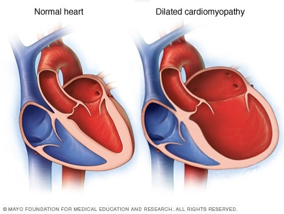

Cardiomyopathy

SYMPTOMS:
- fatigue
-
bloating
-
swollen legs, especially ankles and feet
-
shortness of breath
-
pounding or rapid pulse
CAUSES:
- Dilated cardiomyopathy-It leads to a weakened heart. It may be the result of previous damage to the heart, such as the kind caused by drugs, infections, and heart attack. It may also be an inherited condition or the result of uncontrolled blood pressure.
-
Hypertrophic cardiomyopathy-This type of heart disease leads to a thicker heart muscle. It’s usually inherited.
-
Restrictive cardiomyopathy-It’s often unclear what leads to this type of cardiomyopathy, which results in rigid heart walls.